| Logan Franken | |
| @loganfranken | |
| goo.gl/oed3yY | |
| goo.gl/MLwIhD |
img { max-width: 100%; }Same image, despite context
<img src="low-res-version.jpg" class="low-res" />
<img src="high-res-version.jpg" class="high-res" />.high-res { display: none; }
@media (min-width: 1000px) {
.low-res { display: none; }
.high-res { display: block; }
}.banner { background-image: url('low-res-version.jpg'); }
@media(min-width: 1000px)
{
.banner { background-image: url('high-res-version.jpg'); }
}Serve images through a server-side handler
Adaptive Images uses a cookie
Serve images through a third-party hosted service
<img src="low-res-version.jpg"
data-fullsrc="high-res-version.jpg" />Use JavaScript to swap out with the appropriate version
...with some clever hacks
Is there a responsive file format?
What if the browser could provide more information about the device to the server?
GET /index.html HTTP/1.1
Client-Hint: device-pixel-ratio=2, viewport=1280x720, ...<img src="high-res-version.jpg"
srcset="low-res-version.jpg 1000w 1x,
low-res-version-hd.jpg 1000w 2x">Compact media query-ish syntax
<picture>
<source media="(min-width: 1000px)"
srcset="high-res-version.jpg 1x,
high-res-version-hd.jpg 2x">
<source
srcset="low-res-version.jpg 1x,
low-res-version-hd.jpg 2x">
<img src="low-res-version.jpg">
</picture>Standard media queries with video-like syntax
Responsive Forms vs. Data Readability
(Scott Jehl: Create pie chart with jQuery Visualize)
| 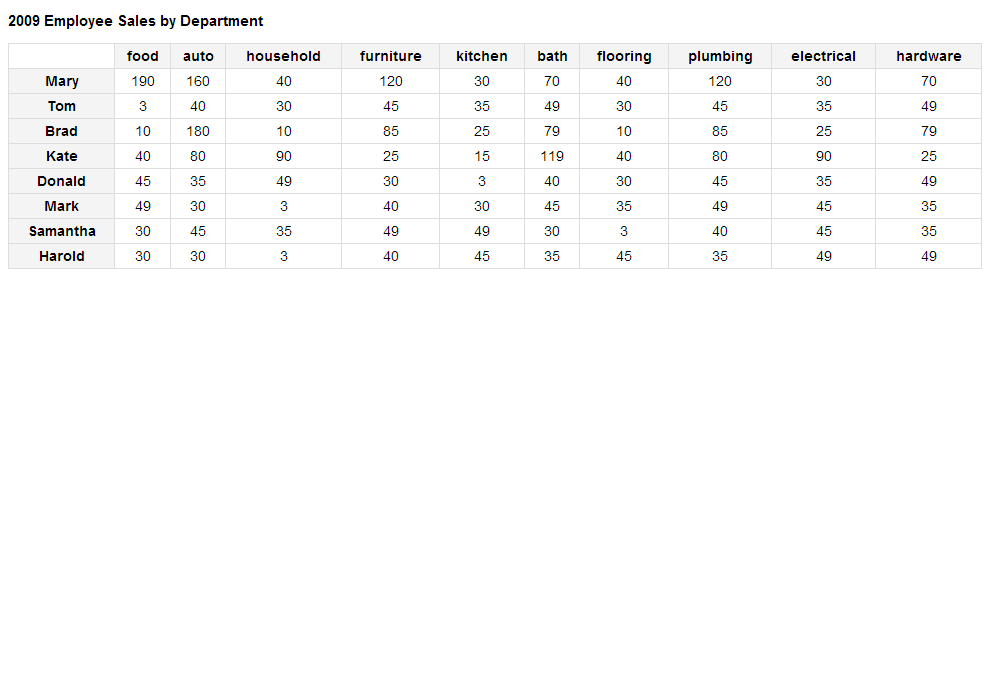 | 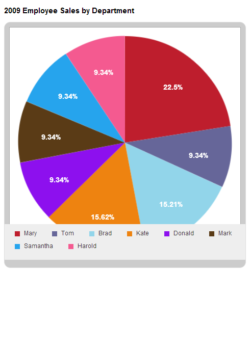 |
(Scott Jehl: Shrink table to mini version, click to expand)
| 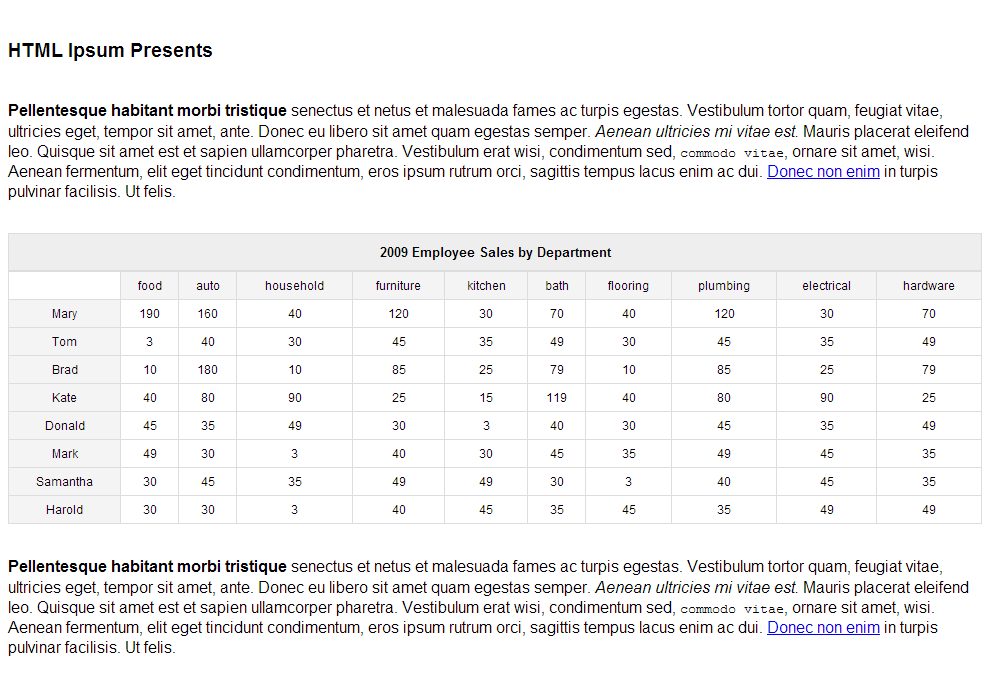 | 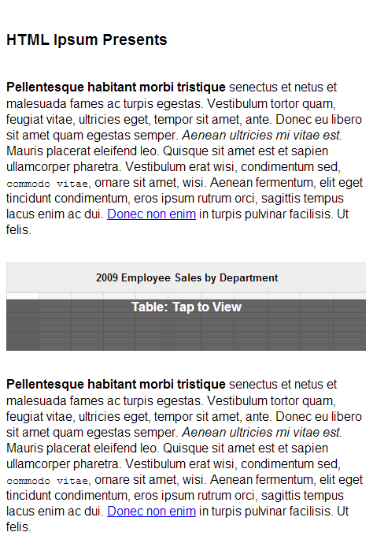 |
(Brad Czerniak: Color and inline everything)
| 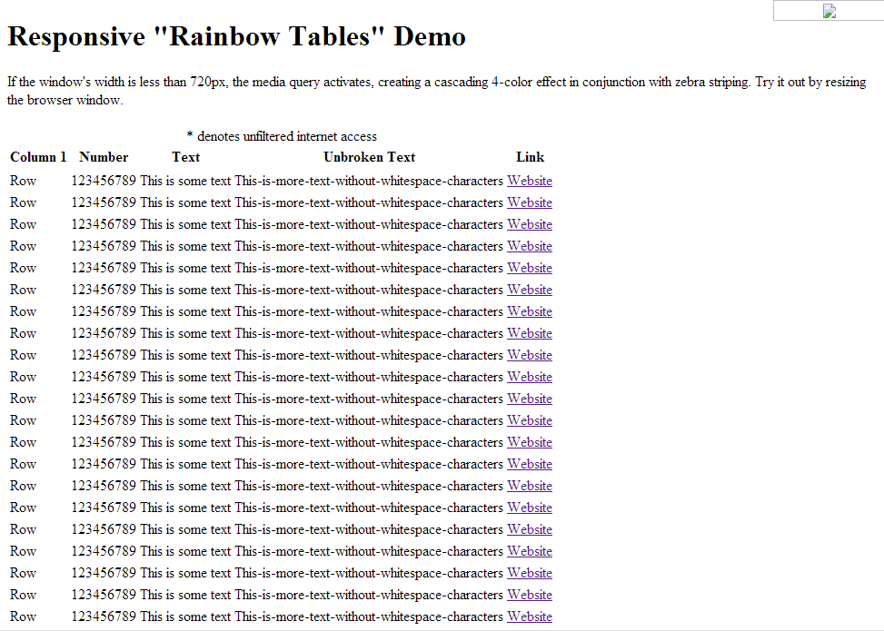 | 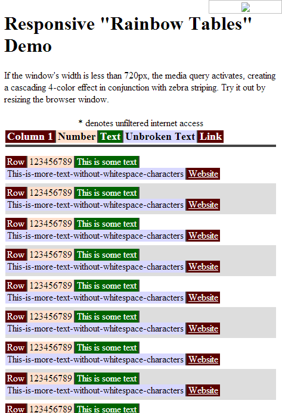 |
(FooTable: Move data from marked columns into expandable rows)
| 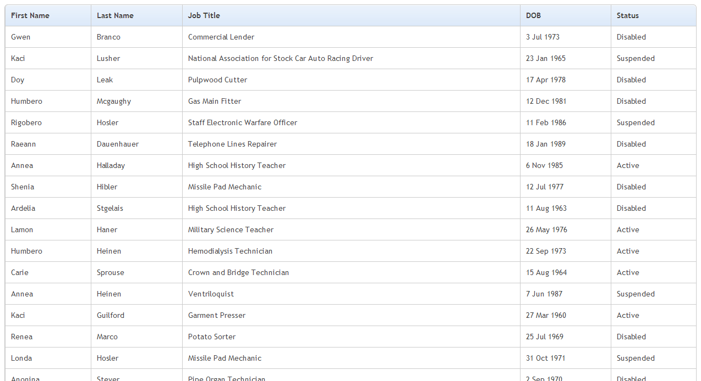 | 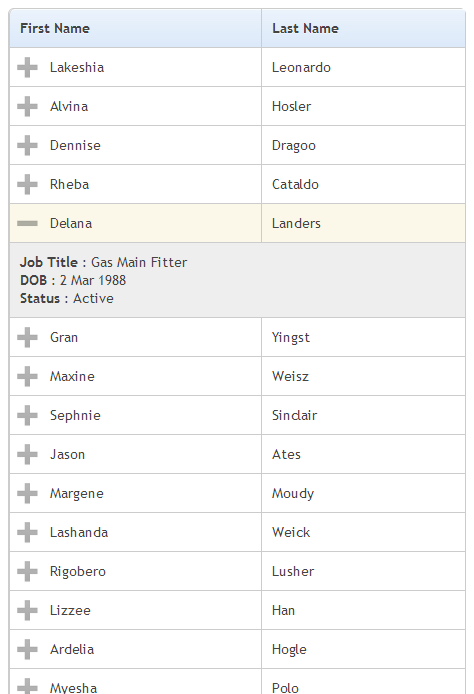 |
(Filament Group: Hide columns marked with class)
| 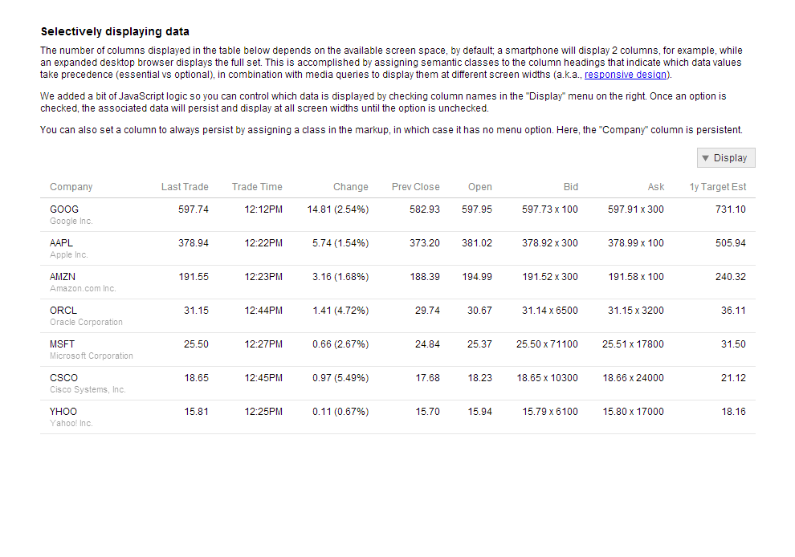 | 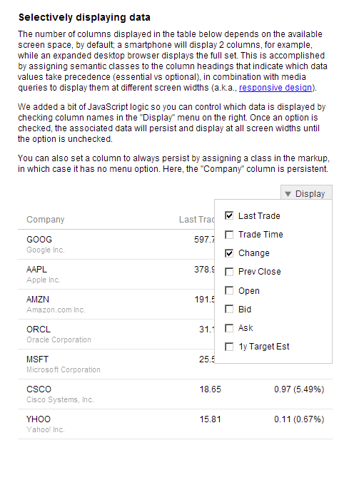 |
(David Bushell: Float thead and overflow tbody)
| 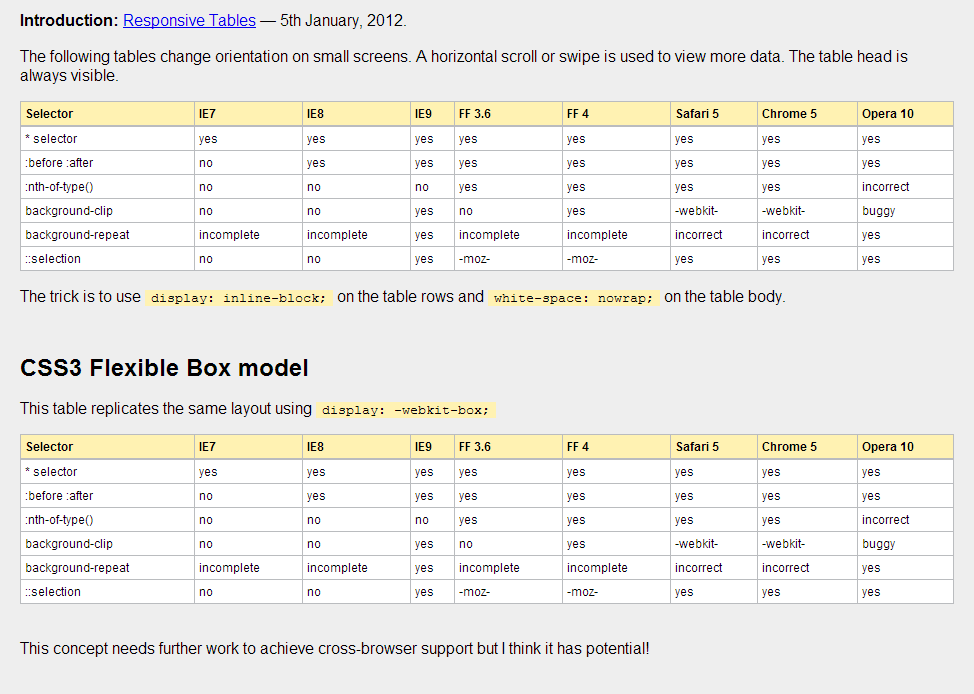 | 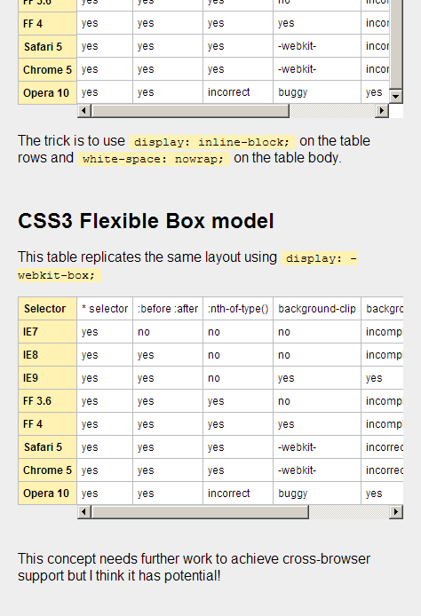 |
(CSS Tricks: Inject column headers with td:before)
| 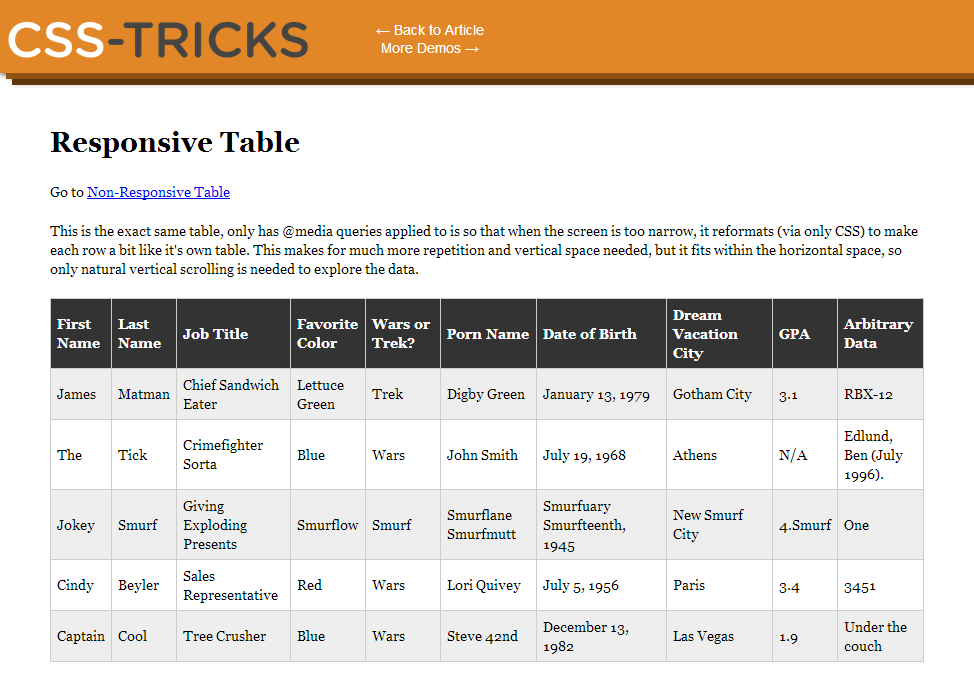 | 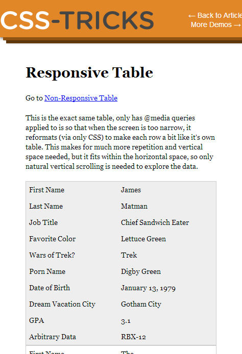 |